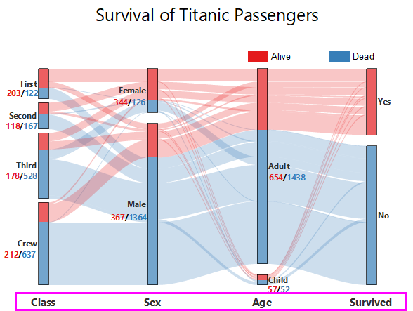

|
サンキー
|
サンキーマップ
|
|
アルビアル
|
ネットワーク
|
ノードのラベルを表示するか指定します。ノードに表示するラベルは次の2種類あります。
表示するノードのカテゴリー名を選択します。ノードの外側またはノードの内側に表示、フォント、テキスト折り返し、表示名として他の列の使用、などを指定できます。
ノードの外側に名前を表示する場合、外側の場合のラベル位置とオフセットを使用してラベル位置を設定できます。
サンキーマップでは、文字数でテキストを折り返すで指定した文字数で、名前のテキストを折り返しできます。このコントロールのデフォルト値は15です。
ノードの合計値を表示するか選択します。ノードの外側またはノードの内側に表示、フォント、数値の表現形式、接頭辞または接尾辞などを指定できます。
アルビアルダイアグラムでは、ノードの実際の値はないので、カウントあるいはパーセント値をラベルとして表示するように設定できます。また、パーセント表示の場合小数点桁数を設定できます。
ノードのラベルとして名前または合計値を表示する設定で、ノードの外側を選択している場合、ノラベル位置を指定できます。
その方向にオフセットを付けてラベルを表示します。
名前と合計値両方を表示し、同じ位置（ノードの外側またはノードの内側）に設定した場合、名前が先か値が先かを選択したり、単一行で表示するか、セパレータを表示するかを指定するかを設定できます。
ネットワークプロットのノードのラベルを表示するか指定します。ラベルの形式と位置をカスタマイズできます。
デフォルトでは、plotnetworkダイアログでノード列とノード行を設定しなかった場合、Originはノードインデックスを使用してノードにラベル付けをします。
中間ワークシートplotnetwork で別の列を選択して、ノードにラベル付けできます。
サンキーダイアグラムまたはネットワークグラフでリンクのラベルを表示するか指定します。ラベルの位置を、リンクの開始、中央、終了から選べます。
また、ラベルのフォントと表示フォーマットを設定できます。表示で、ラベルの数値フォーマット、接頭、接尾を設定できます。
すべてのリンクのラベルを表示するかどうかを決定することもできます。未満の場合は非表示(%)にチェックを入れて、パーセント値を入力して、この値より小さいウェイトを持つリンクのラベルを非表示にします。
アルビアルダイアグラムで各プロット/ステップのラベルを表示するか指定します。

プロットのラベルに既存の識別子を選択できるほか、<カスタム> を選択してプロット識別子ドロップダウンリストから選択し、隣のテキストボックスに何を表示するか入力できます。 この空のテキストボックスでは、ドロップダウンリスト（下向き矢印）またはフライアウトメニュー（右向き矢印ボタン）からサンプルの表記を選択できます。
ラベルのフォント、ラベル位置のオフセット、ラベルテキストの折り返しなども設定できます。
プロット/ステップのラベルをどのように置くか指定します。現在、ラベルを各プロットの下または上に配置することができます。 オフセットを使用することで、プロットからのラベルの垂直オフセットを調整できます。